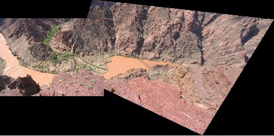

This page lists a number of sample VLFeat applications. Their code
can be found in the VLROOT/apps/ subdirectory.
Basic recognition
This sample application uses VLFeat to train an test an image classifier on the Caltech-101 data. The classifier achieves 65% average accuracy by using a single feature and 15 training images per class. It uses:
- PHOW features (dense multi-scale SIFT descriptors)
- Elkan k-means for fast visual word dictionary construction
- Spatial histograms as image descriptors
- A homogeneous kernel map to transform a Chi2 support vector machine (SVM) into a linear one
- SVM classifiers
The program is fully contained in a single MATLAB M-file, and can also be simply adapted to use your own data (change conf.calDir).
Advanced encodings for recognition
This example application extends the Caltech-101 demo above in many
ways: it supports multiple encoding methods, including BoVW, VLAD, and
Fisher Vectors, tweaked image featuers, and multiple benchmark
datasets. The code is located int apps/recognition. Start
from the main
file.
The following tables report results on a few standard benchmark datasets (PASCAL VOC 2007 classification challenge, Caltech 101 30 training images, MIT Scene 67, and Flickr Material Dataset) for a number of different encodings:
| method | VOC07 | Caltech 101 | Scene 67 | FMD |
|---|---|---|---|---|
| FV | 59.12% mAP | 73.02% Acc | 58.25% Acc | 59.60% Acc |
| FV + aug. | 60.25% mAP | 75.61% Acc | 57.57% Acc | 60.80% Acc |
| FV + s.p. | 62.23% mAP | 77.63% Acc | 61.83% Acc | 60.80% Acc |
| VLAD + aug. | 54.66% mAP | 78.68% Acc | 53.29% Acc | 49.40% Acc |
| BOVW + aug. | 49.87% mAP | 75.98% Acc | 50.22% Acc | 46.00% Acc |
The baseline feature is SIFT (vl_dsift) computed at
seven scales with a factor $\sqrt{2}$ between successive scales, bins
8 pixel wide, and comptued with a step of 4 pixels. All experiments
but the Caltech-101 ones start by doubling the resolution of the input
image. The details of the encodings are as follows:
- Bag-of-visual-words uses 4096 vector quantized visual words histogram square rooting, followed by $L^2$ normalization (Hellinger's kernel).
- VLAD uses 256 vector quantized visual
words, signed square-rooting, component wise $L^2$ normalization, and
global $L^2$ normalization (see
vl_vlad). - Fisher vectors uses a 256 visual words
GMM and the improved formulation (signed square-rooting followed by
$L^2$ normlization, see
vl_fisher). - Learning uses a linear SVM
(see
vl_svmtrain). The parameter $C$ is set to 10 for all dataset except PASCAL VOC, for which it is set to 1. - Experiments labelled with “aug.” encode spatial information by appending the feature coordinates to the descriptor; the ones labelled with “s.p.” use a spatial pyramid with 1x1 and 3x1 subdivisions.
SIFT mosaic
This sample application uses VLFeat to extract SIFT features form a pair of images and match them. It then filters the matches based on RANSAC and produces a mosaic. Read the code.